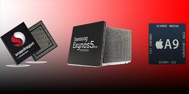
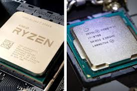

Los procesadores son el corazón de cualquier dispositivo, ya sea un teléfono móvil o una computadora. En el caso de los teléfonos, los SoC (System on Chip) como el Snapdragon, Apple A-series y MediaTek dominan el mercado, mientras que en las computadoras, los procesadores como el Intel Core i7 y el AMD Ryzen 7 son los más populares.
- Snapdragon: La línea Snapdragon de Qualcomm es conocida por su gran rendimiento y eficiencia energética, especialmente en la gama alta, como el Snapdragon 888, que es muy utilizado en dispositivos Android de gama premium. Snapdragon se destaca por su rendimiento equilibrado, especialmente en juegos, con un procesador gráfico Adreno que permite una experiencia visual superior.
- Apple A-series: Los chips A-series de Apple, como el A14 Bionic y el A15 Bionic, están diseñados para ofrecer una combinación de potencia bruta y eficiencia energética. Apple ha logrado una integración profunda con su sistema operativo iOS, lo que permite un rendimiento optimizado en todo el ecosistema de dispositivos de Apple, incluidos iPhones y iPads. Su rendimiento en tareas de IA y procesamiento gráfico es sobresaliente.
- MediaTek: MediaTek ha ganado terreno en el mercado con sus SoCs de gama media y alta. Los chips Dimensity ofrecen un rendimiento competitivo y características como la compatibilidad con 5G, lo que los convierte en una opción atractiva para teléfonos inteligentes de gama media, sin sacrificar demasiado el rendimiento.
- Intel Core i7: Intel es uno de los líderes en el mercado de procesadores para computadoras, y su serie Core i7 se encuentra entre las opciones más potentes para usuarios avanzados. Con múltiples núcleos e hilos, los Core i7 son ideales para tareas que requieren mucho poder de procesamiento, como la edición de video y juegos.
- AMD Ryzen 7: AMD ha crecido significativamente en el mercado de computadoras de alto rendimiento, y sus procesadores Ryzen 7 se presentan como una opción sólida frente a Intel. Los Ryzen 7 ofrecen una excelente relación calidad-precio y un rendimiento excepcional en tareas multihilo, lo que los hace populares entre los entusiastas de los juegos y los creadores de contenido.
Fuente 1 | Fuente 2

Las pruebas de rendimiento (benchmarks) son una herramienta útil para comparar la eficiencia y capacidad de los procesadores en diversas tareas. Al evaluar el rendimiento de los procesadores, se suelen considerar aspectos como la velocidad de procesamiento en tareas cotidianas, el rendimiento gráfico y la capacidad para manejar múltiples aplicaciones simultáneamente.
En el caso de los teléfonos, los benchmarks miden aspectos como el rendimiento de la CPU, la GPU, la eficiencia energética y la capacidad para ejecutar juegos y aplicaciones pesadas. Algunos de los benchmarks más comunes son Geekbench y AnTuTu, que proporcionan una puntuación general del rendimiento del dispositivo.
En las computadoras, los benchmarks evalúan el rendimiento en tareas como la edición de video, el diseño gráfico, la programación y los videojuegos. Aquí, herramientas como Cinebench y 3DMark se utilizan para medir el poder de procesamiento en estas áreas. Los procesadores de la serie Intel Core i7 y AMD Ryzen 7 son conocidos por su alto rendimiento en tareas multihilo y exigentes, como la renderización de gráficos 3D.
Por ejemplo, en términos de rendimiento en juegos, los chips Snapdragon 888 ofrecen una excelente experiencia con una tasa de cuadros por segundo (FPS) alta en títulos AAA. En comparación, un procesador como el Intel Core i7 o el AMD Ryzen 7 puede manejar tareas de edición de video de alta resolución y renderizado 3D con facilidad, superando a los procesadores de teléfonos en tareas de alto rendimiento.
Fuente 1 | Fuente 2
El precio de un procesador puede variar significativamente según su potencia y capacidades. Es importante evaluar si el costo del procesador justifica el rendimiento que ofrece, especialmente cuando se comparan opciones de diferentes gamas.
En teléfonos, los procesadores como el Snapdragon 888 y el Apple A15 Bionic ofrecen un rendimiento sobresaliente, pero también son más caros. Sin embargo, procesadores más accesibles como el Snapdragon 765G o el MediaTek Dimensity 800U ofrecen una experiencia sólida para tareas cotidianas a un precio más bajo, lo que los hace ideales para teléfonos de gama media.
En computadoras, los procesadores como el Intel Core i7 y el AMD Ryzen 7 se sitúan en un rango de precios más alto, pero su rendimiento en tareas exigentes como la edición de video o los videojuegos de alta calidad justifica su precio. Para usuarios con necesidades más básicas, opciones como los Intel Core i5 o AMD Ryzen 5 proporcionan un excelente rendimiento a un costo más bajo.
Al final, la clave está en encontrar el equilibrio adecuado entre el precio y el rendimiento según las necesidades del usuario. Los procesadores más caros no siempre son la mejor opción para todos los usuarios, especialmente si solo se necesitan para tareas más simples.
Fuente 1 | Fuente 2
